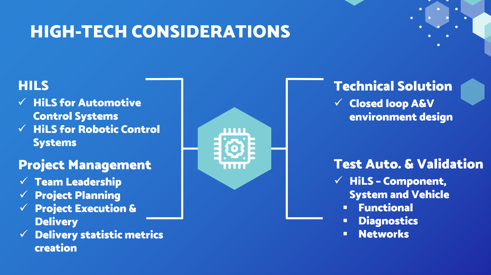
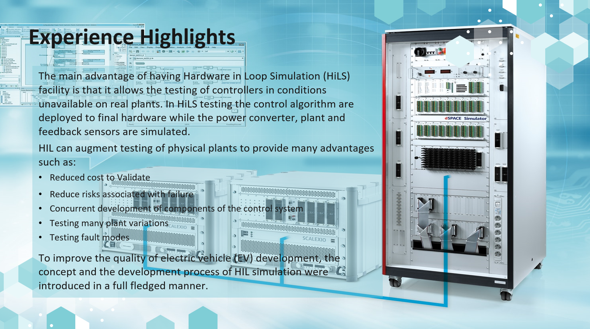

Professional Summary
Principal Test Facility Development and V&V Engineer
Welcome to My Professional Portfolio.
With over 20 years of technical expertise in delivering advanced Hardware in the Loop (HiL) simulation platforms, automated test systems, and validation infrastructures for automotive, electrified powertrain, battery management, and safety-critical applications. Recognized specialist in dSPACE, Speedgoat, and ETAS real-time closed-loop simulation environments, with deep expertise in establishing cost-effective, scalable in-house validation capabilities that significantly optimize product development cycles and time-to-market.
Leadership, Commercial Traceability & Strategy:
- Led and line-managed highly technical global teams in Hardware-in-the-Loop Simulation (HILS), Automated Testing & Verification (A&V), Model-Based System Engineering (MBSE), and Model-Based Design (MBD).
- Supported pre-sales and new business initiatives via architecture designs, technical solutions engineering, CAPEX proposals, and Proof of Concept (PoC) demonstrations for strategic OEM and Tier-1 accounts.
- Incorporated end-to-end V-Cycle frameworks into facility roadmaps, aligning requirements traceabilities (IBM DOORS, Codebeamer) cleanly down to final execution phases.
- Mentored and established robust talent pipelines, successfully transitioning entry and mid-level validation engineers into senior technical specialist tracks.
Project, Risk & Asset Governance:
- Proficient in project resource lifecycle configuration, project planning, tracking, risk analysis, mitigation modeling, resource allocations, effort costing, and Bill of Materials (BOM) asset preparation.
- Experienced in generating hybrid Agile or Waterfall Gantt dependencies, reporting operational performance against integrated tracks to senior programme stakeholders via clear RAG (Red-Amber-Green) frameworks.
- Identified long-lead structural system design hazards early inside the development cycle, shifting validations leftward to limit critical system errors during field acceptance deployments.
Infrastructure & Cross-Domain Toolchain Architectures:
- Integrated validation environments spanning MiL, SiL, PiL, HiL, BiL, and ViL platforms from scratch using industry-standard environments.
- Expertise in designing, commissioning, and maintaining comprehensive HILS validation facilities using the MathWorks toolchain ecosystem alongside dSPACE and Speedgoat real-time systems.
- Specialized in control systems architectures, supporting complex validation workflows across ISO 26262 functional safety, automated validation toolchains, and real-time environment configurations.
Technical Core Domains:
- Advanced mastery over MATLAB, Simulink, Stateflow, and custom C/C++ S-Function blocks optimized for low-latency embedded processing engines.
- Deep engineering exposure across automotive EV powertrain systems, battery management systems (BMS), high-voltage motor control, active safety systems (ABS/ESP), and multi-degree-of-freedom robotic navigation systems.
Engineering Expertise
Core Systems Competency
Design, Development, Integration, and Maintenance of Enterprise Hardware in the Loop (HiL) validation infrastructures.
- MathWorks (Matlab, Simulink, Stateflow, Simscape)
- dSPACE HiL Platforms
- ControlDesk & ConfigurationDesk
- Speedgoat Real-Time / Simulink Real-Time
- Continuous Integration & Automated Testing (CI/CD/CT)
- ISO 26262 Functional Safety V&V
- Python, C & C++
- Control Systems Design

Core Activities & Lifecycle Ownership
- Collaborating with cross-functional system engineering units to extract target test coverage maps.
- Analyzing schematics to engineer physical-to-signal boundary layouts matching simulator system I/O capabilities.
- Developing high-level technical specifications, RFQs, CAPEX business proposals, and supplier criteria.
- Assembling and constructing high-fidelity real-time closed-loop frameworks, including Sensor Models, Plant Models, Rest Bus Simulations, Actuator Models, and Fault Insertion Units (FIU).
- Validating system properties during Factory Acceptance Testing (FAT) and executing final on-site closed-loop system commissioning.
Selected Project Deliverables
Value Delivery of Advanced Real-Time Simulation
Integrating modern real-time validation methodologies shifts system failure discovery forward into risk-free lab environments, optimizing overall software code verification.
Primary Industries Governed:
| Automotive & Electrification | Aerospace & Defence | Robotics & Autonomous Systems | Railway Components | Consumer Electronics |

Project: Robotic Navigation & Locomotion Real-Time Platform
Year: 2022
Complete Architecture, Development, and System Deployment of a Scalable real-time HiL framework for advanced robotic applications.
- Systems Governed: High-bandwidth Locomotion and Path Navigation Control engines processing multi-sensor matrices (Camera pipelines, Time of Flight tracking, IMUs, Bump Switches, and Thermal profiles).
- Environment Stack: Speedgoat Real-Time Target Machines, custom FPGA I/O sub-modules, High-Power Electric Motor Emulators, MATLAB Simulink Real-Time, and UNITY visual environment integrations.
- Operational Governance: Managed requirements lifecycle extraction, technical solution pitches, asset procurement support, complex mathematical model conversions, Factory Acceptance Testing (FAT), and complete technical team onboarding.

Key Program Achievements:
- Successfully deployed a highly integrated multi-controller Speedgoat target rig capable of validating fast locomotion routines under safe lab conditions.
- Optimized sensor processing models to ensure precision verification of Time of Flight, high-speed camera streams, and active mechanical switch arrays.
- Maintained continuous technical program monitoring via robust tracking, mitigating budget issues and delivering proactive technical solution risk profiles straight to stakeholders.
- Onboarded and trained incoming validation engineers on real-time sub-system model modifications, ensuring sustainable operational continuity.
Project: Advanced Driver-in-the-Loop Validation Infrastructure
Year: 2018
Design, Systems Architecture, and Closed-Loop Commissioning of a high-fidelity Driver-in-the-Loop (DiL) flight-simulator class facility.
Tier-1 / OEM | UK
- Target Systems: Electrified Powertrain Modules and Safety-Critical Chassis Dynamics control interfaces.
- Simulation Suite: Distributed dSPACE Multi-Simulator Architectures, dSPACE ControlDesk, ModelDesk (ASM Vehicle Environments), MotionDesk Visualizers, and ConfigurationDesk engine tools integrated alongside MATLAB Simulink.

Key Program Achievements:
- Pioneered an active driving platform allowing direct human driver interactions with simulated electronic powertrain controls, accelerating drivability tuning phases.
- Integrated complex real-time vehicle dynamics models (ASM) over low-latency networks, significantly reducing track validation requirements.
- Governed departmental lifecycle initiatives including training, recruitment of specialists, engineering performance structures, and cross-functional taskforce allocations.
Project: Active Safety & Multi-Domain Powertrain Integration Platform
Year: 2016
Full Lifecycle Design, Development, and Commissioning of a multi-rate automotive simulation environment.
Tier-1 / OEM | UK
- Target Systems: Active Safety Electronics (ABS/ESP platforms) and Multi-Domain Powertrains (Engine Management, Transmission Controllers, and Transfer Case Modules).
- Environment Stack: Scaled dSPACE hardware platforms, ControlDesk, ModelDesk, ConfigurationDesk, and MATLAB Simulink, with integrated co-simulations via GT-Power.

Key Program Achievements:
- Engineered and integrated heterogeneous network simulations combining high-speed CAN and time-triggered FlexRay automotive bus topologies.
- Designed structural breakout interfaces and complex wiring schematics enabling safe fault insertion capabilities directly onto safety-critical ECU hardware.
- Coordinated clean laboratory asset rollouts, obtaining site facility approvals, and implementing global lessons-learned strategies to drive operational excellence.
Project: High-Density Body Electronics & Chassis Network Platform
Year: 2014
Design and Deployment of a high-density, multi-ECU consolidated network validation setup.
Tier-1 / OEM | UK
- Target Units: Body Control Modules (BCM), Gateway Modules (GWM), Door Control units (DDM/PDM), Seat Modules (NGSM), HVAC Controls, ABS/ESP safety controllers, and Electric Power Assisted Steering (EPAS).
- Simulation Architecture: Dual synchronized dSPACE PHS Bus Target Simulators running complex state machines in MATLAB Simulink and Stateflow.

Key Program Achievements:
- Successfully integrated multiple discrete automotive ECUs concurrently onto a single consolidated real-time wet-bench matrix environment.
- Resolved complex rest-bus communication errors during early build integration states, preventing downstream physical vehicle testing delays.
- Delivered a highly robust automated regression test structure within budget, allowing reliable firmware quality audits prior to software release cycles.
Project: EV & Advanced Vehicle Propulsion Systems Validation Rig
Year: 2013
Complete turn-key development of an in-house Advanced Propulsion and Electric Powertrain simulation platform.
Tier-1 / OEM | UK
- Project Core: EV Powertrain, Inverters, Battery Management Systems (BMS), and Advanced Propulsion controllers.
- Simulation Architectures: Synchronized migration utilizing legacy dSPACE PHS architectures alongside next-generation dSPACE SCALEXIO real-time hardware engines processing Matlab/Simulink networks.

Key Program Achievements:
- Spearheaded total structural facility optimization, maximizing physical layout constraints to deliver a fully protected laboratory environment for advanced EV validation testing.
- Constructed tailored real-time interface models, managing full lifecycle BOM control, hardware procurement, wire harness architecture design, and closed-loop validation testing.
- Significantly cut program operating expenditures by bringing advanced real-time testing capabilities entirely in-house, optimizing engineering test velocities.
Education & Credentials
- Master of Technology (M.Tech) in Automotive Electronics
BITS Pilani - Post Graduate Diploma in Embedded Systems
NIELIT - Bachelor of Technology (B.Tech) in Electronics & Communication Engineering
Pondicherry University
Contact & Professional Links
If you would like to discuss validation strategies, architectural consulting, or technical facility development, please get in touch.
Location: Chippenham, United Kingdom
Email: rakeshukrishna@gmail.com
Phone: 07721687740
LinkedIn: linkedin.com/in/rakesh-krishna